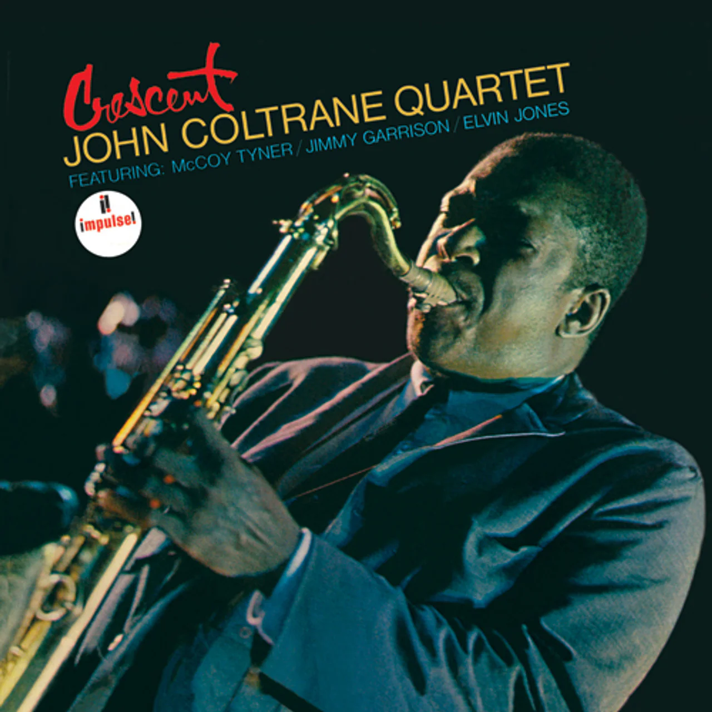
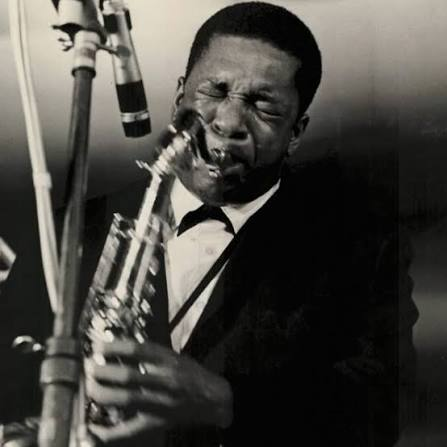
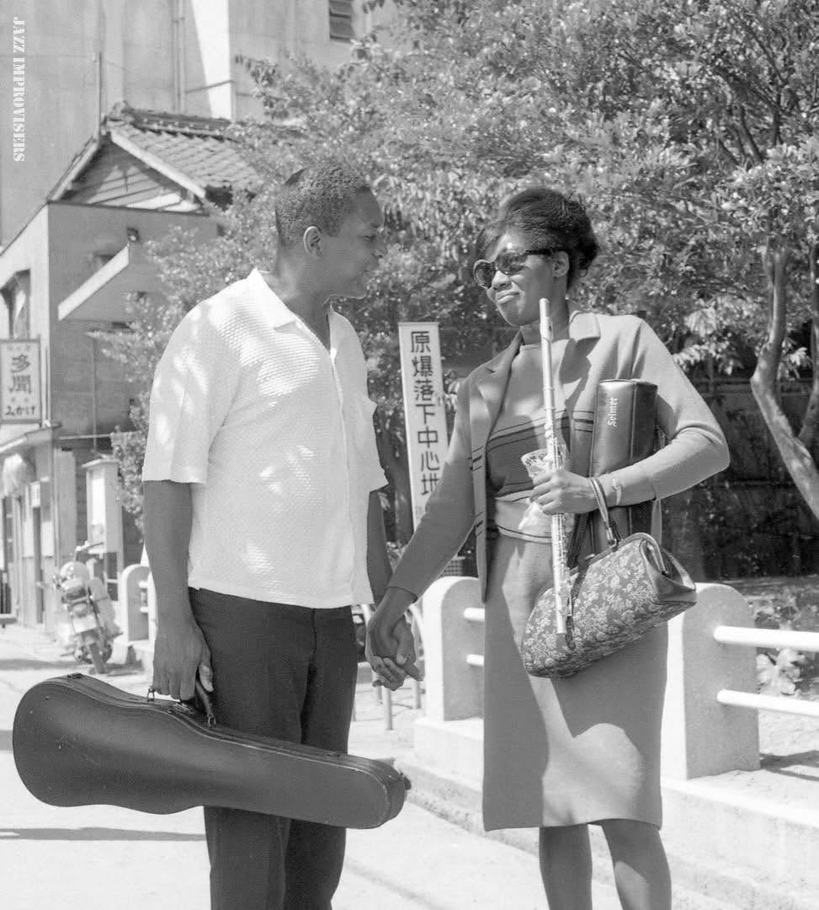

John Coltrane
Cliccare sulle immagini per ascoltare!
Crescent


Pubblicato a luglio 1964. Registrato tra il 27 aprile 1964 e il 1º giugno 1964.
A Love Supreme


Pubblicato a gennaio 1965. Registrato il 9 dicembre 1964.
Ascension


Pubblicato a febbraio 1966. Registrato il 28 giugno 1965.
Live in Japan


Pubblicato nel 1991. Registrato tra l'11 e il 22 luglio 1966.
Interstellar Space


Pubblicato a settembre 1974. Registrato il 22 febbraio 1967.